主线
初入八荒
【先天气运1介绍】
【先天气运2介绍】
【先天气运3介绍】
有一天，你在后山玩耍，走入了一片竹林…
竹林中气氛诡异，似乎从未有人来过此处…微风吹动竹林发出“沙沙的响声，仿佛在引导你继续前往深处
你在竹林深处发现了一张石桌，你不由自主地朝着石桌走去…
？？？：你来了？
我：…此地是何处？
？？？：你可以…称这里为——鬼谷。
我：你是何人？
？？？：你可以…称老夫为——张三。
我：这是棋盘吗？
？？？：这盘棋已经下了三千年了，没有开始，也永远不会结束…你亦可以称之为“八荒山海图”。
我：我是谁？我来自哪里？我要去哪里？
？？？：哈哈哈，问得好，问得好！
你是谁？你来自哪里？你要去哪里？
小友，不如我们先手谈一盘如何？我可以让你一子。
昊天眼
双鱼佩
炼妖壶
我：（这是何地？方才那名老者到底是…）
？？？：天…元…山…
我：？！
？？？：到天元山来…我会一直在天元山中等你…
我：你是谁？！天元山在何处？
我：（……声音彻底消失了。）
我：（天元山…先到附近寻人打听一番，看看是否有人知道此地吧。）
我：（…棋盘的正中央，刻着“天元山”的字样。）
我：前方似乎有杀气。
我：来者不善，我得谨慎行动。
药灵：年轻的修仙者哟~要不要尝尝又香又甜的剧毒蘑菇噢？吃完保证会死哦~
药灵：很好吃的哦，看的我都流口水了~~吭呲…哎呀！被我自己吃掉了！！
药灵：哎呦——好惨呐~请不要吃我，呜呜呜……嗯？？这是什么光？好刺眼！
（此时炼妖壶发出耀眼的光芒，将药灵吸入其中）
药灵之灵：呜~呼——刚才发生了什么？感觉自己好像被炼化了一样…！！我的样子？怎么变成这样了！？
我：……
药灵之灵：都是你害的，你赔！呜呜呜……还不快点保护我离开这里！！
我：好强的灵力！还不止一个，究竟是何人？！
正道修士：正魔自古不两立，我既为某宗门内门弟子，今日定要取你性命！
魔道修士：正道？不过是一群以冠冕堂皇的理由行卑劣之事的伪君子罢了！废话少说，要战便战！
我：此人的伤势非常严重，定然是刚才的雷龙所为。该怎么做？
救助
修士：非常感谢道友出手相救。在下【修士名】，是某宗门的内门弟子。我身上有一封推荐信，我见道友还是一名散修，若无其它去处，可凭此推荐信加入我某宗门。后会有期！
修士：谢谢你救了我…我是【修士名】，某宗门的内门弟子。这次出来为宗门寻找有潜力的弟子，谁知碰上了贼人…我这里有一封推荐信，你若没有别的去处，就来某宗门找我吧！后会有期！
杀害
观察
我再想想
我：（方才那人所给的宗门信物似乎发生了一些变化…怎么回事？！）
我：（看来只要有宗门信物，无论身在何处都能寻到此宗门。）
我：（先寻一处落脚点，慢慢收集情报吧。）
我：（不远处似乎有一个城镇，先过去看看。）
药灵之灵：到这里应该安全了，你的葫芦还不赖嘛~叫炼妖壶是吧？待在里边还挺舒服的，我要在这儿种蘑菇！
药灵之灵：刚才我在里边研究了一下，你的这个葫芦好像是可以将一些特定妖兽吸收进来、然后进行炼化。之后他们的外观嘛，就会发现类似我这样的变化。
药灵之灵：感觉还不错，我还蛮喜欢这个新造型的…我决定了！就让你一直做我的护卫吧！！多多利用你这个葫芦，在战斗中好好儿保护我！嘿嘿~
药灵之灵：这个叫炼妖壶的葫芦，除了让你做我的护卫之外，似乎还有许多其他作用。具体我也不太懂，你自己看着研究算了。加油干吧，我的专职护卫！！
祖师云房

突破筑基境后在永宁州大地图移动概率触发。
前去探索途中两名炼丹师提及的祖师云房。
静坐后获得后天气运丹心极意2月。
完成后在大地图移动触发前方风波。
当身上拥有丹心极意气运效果之时，进行突破可获得丹师特殊逆天改命效果。丹髓气运消失后，可在祖师云房处静坐重新获得。同时，若有可升级或可学习的丹方时亦可回到云房中参悟学习。
炼丹师男：听闻那个地方乃昔日祖师炼丹静修之地。
炼丹师女：药长老曾说祖师爷的云房就在永宁州中。祖师昔日在此繁荣之地静修，这可叫人有点始料不及。
炼丹师男：这你就有所不知了，大隐住朝市，小隐入樊丘。更何况祖师爷当年静修之际，此处可能仍未筑就大城。
炼丹师女：这倒说得是。药长老说，在祖师云房中，静坐片刻即能身心宁定，以此状态突破境界甚至能感悟特殊逆天改命，也不知是也不是。关键是听闻祖师曾在里面静修一个甲子，因此云房之中残留祖师的一缕神识！
炼丹师男：眼下尽快找到祖师云房才是紧要，你想那些有的没的作甚？
二人边说边走，眨眼去得远了。
我：永宁州……祖师云房？
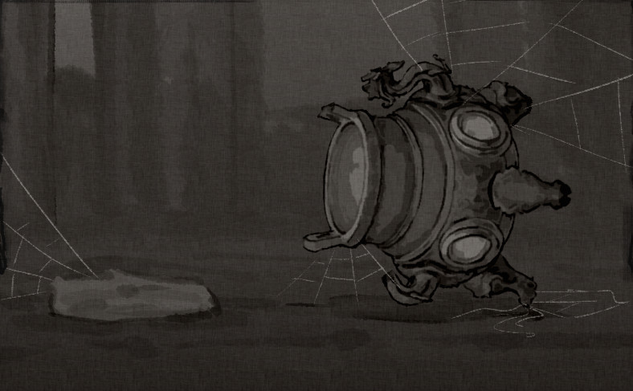
你在城中找到一处修仙者闭关修炼的云房，里面布满蛛网尘埃，狭窄的内室除去一个残旧的蒲团，还有一座精致的铜鼎。
在蒲团上打坐

你在蒲团中略一静坐，随即入定。于识海一片澄静之际，你觉得身前似乎站着一人。你微觉不对，睁开眼时发现室中一切如故，并无他人，只是周围飘泛一股淡淡药香。
当身上拥有丹心极意气运效果之时，进行突破可获得丹师特殊逆天改命效果。丹髓气运消失后，可在祖师云房处静坐重新获得。同时，若有可升级或可学习的丹方时亦可回到云房中参悟学习。
前方风波
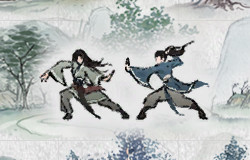
完成祖师云房后在大地图移动概率触发。
前去查看前方恶战情势。
完成后获得丹方辑录，领取到任务：查看丹方辑录。
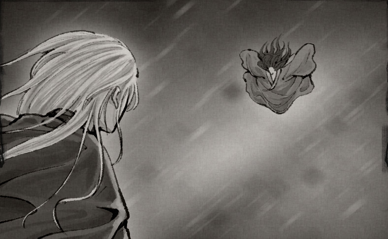
路至半途，突然听见远方传来一阵激响。你抬头看时，发现数名修仙者正在恶战。他们边走边斗，眨眼已经远去。

你一路追寻，不多时发现前方躺了五六具尸，而一名女子正对一个躺倒且还有生机的人动什么手脚。
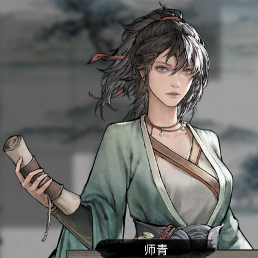
师青：可惜……

女子摇摇头，随即发现你的存在。但她只看了你一眼便足下一点，飞身离开了。

地上之人腹部出现一大道创口，情状惨不忍睹。而且脸上充斥一股浓重的黑气，似乎中了剧毒。此人身边还放着一个药鼎，十分特别。
查看药鼎

药鼎通身碧玉打造，十分精致。经你触摸之后，药鼎生出温热，且渐至滚烫。
我：此物究竟是……
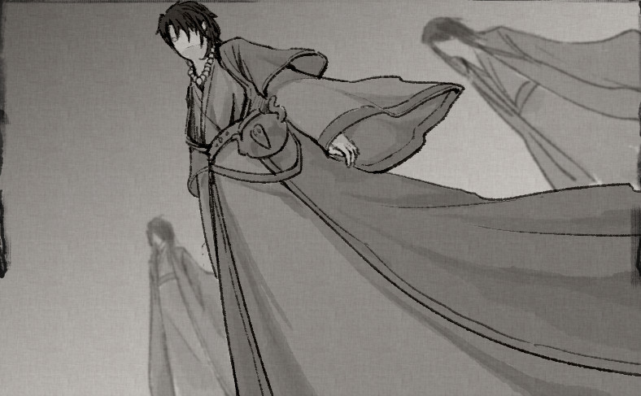
此时风声猎猎，几名男子当空而落。为首之人长身英俊，他目光先看向地上几具尸体，再看你手中药鼎，最后才迎上你的目光。

宋东庭：振心洗髓之术，是师长老的手笔。没想到竟给一网打尽。

药辰尊：嗯。
药辰尊：在下神鼎观长老药辰尊。这是我神鼎观丹师所佩丹鼎。
交还丹鼎
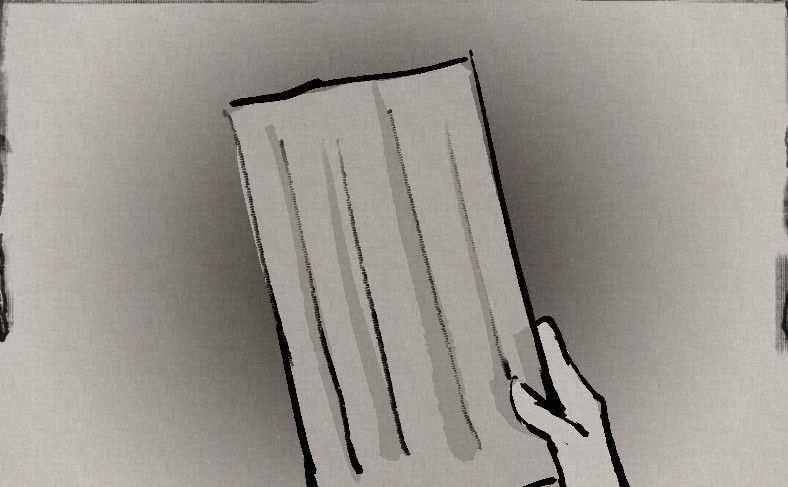
药辰尊没有收回你手中药鼎，还给你递来一张丹方。
药辰尊：你拾获药鼎也是机缘，此方原是药鼎主人所有，也一并送你吧。
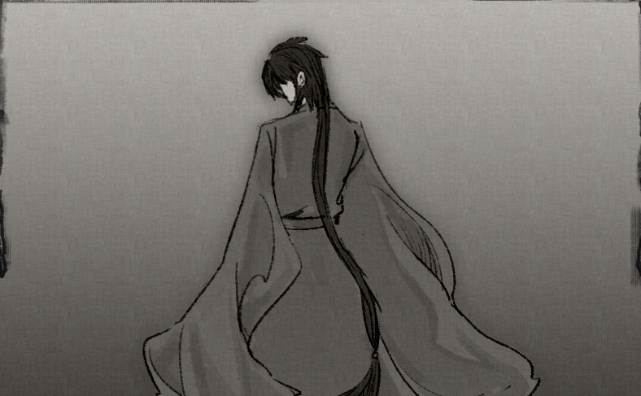
药辰尊将丹方交给你后，便带领手下离开。
查看丹方辑录
查看神鼎观观主所赠的丹方辑录。
完成后学习到元阳丹、千毒香、 天罡丸丹方。
六宗联盟已发现我等行踪，不日将有恶战，必须将此信带回华封州主府。为保最近钻研所得，兹将丹方录下。未来我观新丹大会，务需将之上交。
生成噬魂剑NPC
修为到达筑基境后在华封州大地图移动。
“仔细探查”后将生成1位带噬魂剑的NPC。
认为“可能看错了”本局游戏不会生成带噬魂剑的NPC。
“本局游戏”指的是游玩的这个存档。
行走间前方一片区域引起了你的注意。
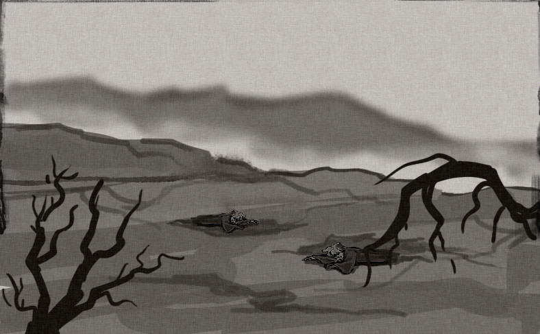
此处草木枯死，土地龟裂，似乎还有修仙者倒毙其中。
1 可能看错了
本局游戏不会生成带噬魂剑的修仙者

离近探查，发现不过是一具傀儡。你在心中暗笑了自己的小心谨慎，然后离开了这里。
2 仔细探查
本局游戏将生成1位带噬魂剑的修仙者

仔细探查一番后发现，死者竟然是元魂被生生抽离而死。其生前修为至少达到筑基境！
我：（附近有邪修…！）
你再次仔细感应，确认周围没有其他人后快速离开了这里。
霜狐梦引
在华封州大地图移动触发。
获得凝虹宝玉×1。
华封器灵相关剧情，暗示主角受霜狐族喜爱。
一句话一张图，下血本了。
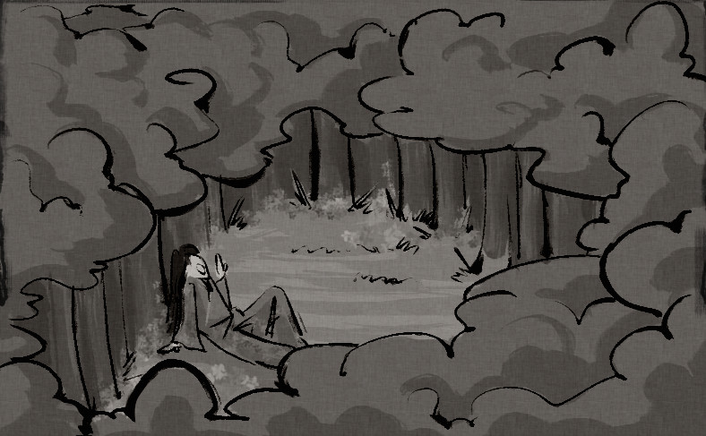
这日，你正匆匆赶路，突然一阵困意上涌。你一时难抵睡魔侵袭，就在路旁趁荫而憩。

不久你便沉沉睡去。梦中，你只觉四下云雾缭绕、仙气氤氲。周围有无数仙狐萦绕，你心中倍感奇特。
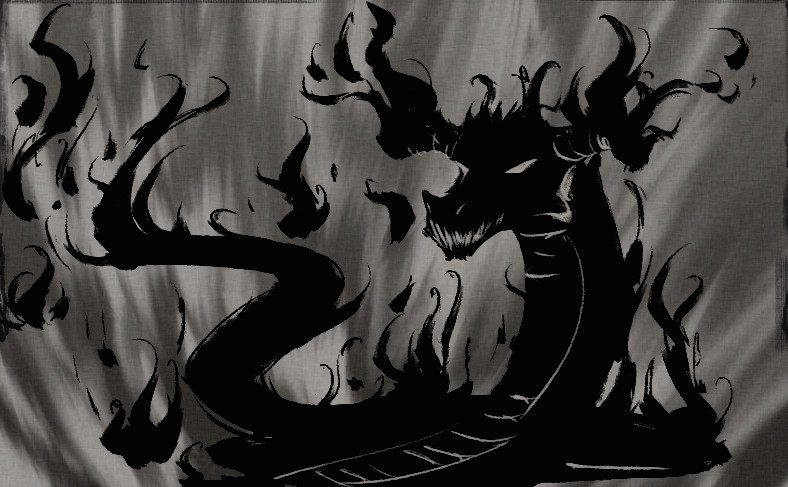
突然，一张血盆大口出现在你面前，只见一头凶兽浑身散发烈焰，正朝你猛扑而来。天空似乎都被点燃，瞬息间宛若火烧。

你全身紧绷，无法动弹，只能眼睁睁看着火焰将全身吞噬。燃烧着的体表一点点化作灰烬，继而随风飘散。
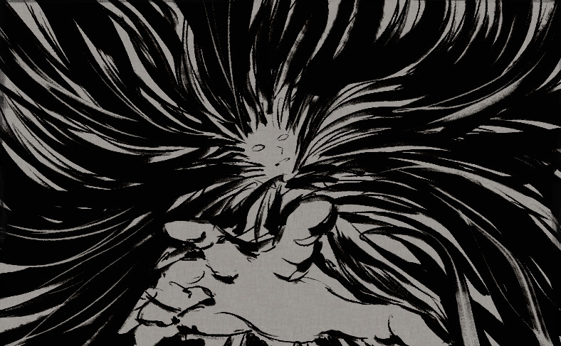
然而，你的意识非但没有消失，反而变得愈加沉重、仿有千斤。你感觉自己跌落云雾，如坠万丈深渊。

随着胸口传来一声闷响，你发现自己身处一个幽暗之地，可就在此处，四周竟也有不少狐狸，它们与之前所见一般无二，煞是诡异。
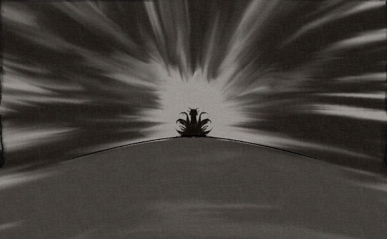
“你还好吗？”你的脑海中响起一个声音，随后，一道孤寂的倩影出现在你的意识之中。
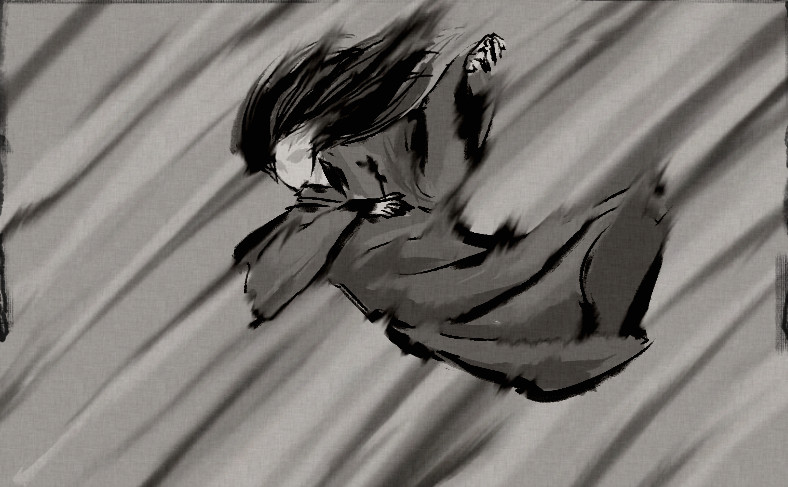
“你……”你下意识地想催动身体往前走，想伸手触碰那道背影，可却宛如一脚踩空，那背影消失无踪。
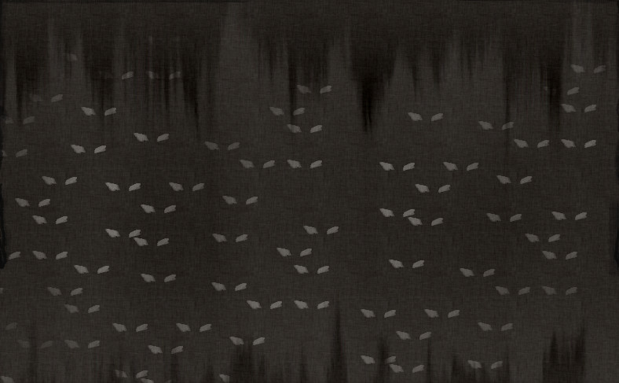
就在这时，你周围突然出现无数鬼怪，他们将你团团围住，拍手相迎。

“啊！”随着一声惊呼，你醒了过来。你发现手中沉甸甸的，低头一看，竟发现手里正捧着一块玉石。
涂山狭讨封劫
在华封州大地图移动触发。
“默然离去”直接结束。
“讨封”是民间传说中的概念，狐狸修炼到一定阶段会向人讨封，问自己像不像人，得到肯定才能进阶。
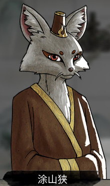
涂山狭：你这人好不讲理！我只不过讨你一句口封，你若是不想搭理，只管离开便是，为何要为难于我？
修仙者：哈哈哈，俗话说请神容易送神难，你既然有此一问，我便让你死个明白！
修仙者：前日，我家宗主于某登仙大能处偶得秘讯，说冥山近来云雾初开，似有妖灵现世，得之可获天大机缘！
修仙者：我看你这般模样，分明就是宗主所言之妖灵！你既然送上门来，我岂能错过？看招！
涂山狭：哇呀呀！救命呐！
1 解救狐妖
我：哼！仗着修为高就欺负人？
修仙者：你可给我记好了，在下他日必报此仇！
涂山狭：……多谢道友相救，在下实力不济便擅离涂山四处讨封，实在惭愧。
我：听那人方才所言……
涂山狭：哦，那纯属误会，我只是涂山狐族的一员，才不是什么妖灵……
涂山狭：不过我倒突然想起，在我临走前，大长老总是一脸凝重，还不时望向冥山的方向，恐怕的确是有事发生。
涂山狭：我行至华封州时，曾途径一处所在，想来离冥山不远。当时我突然有种奇异之感，似乎有股熟悉的气息萦绕周围。
涂山狭：没等我仔细寻觅，那气息就又散去了。
涂山狭：你若有意，自行前去探查即可。我可要速回涂山去了，告辞!
2 帮助修士
修仙者：嗯？道友不必插手，在下足以了结此妖！
就趁着修士一愣神的工夫，那狐妖变为一道流光，飞也似地逃走了。
修仙者：呃……奸诈妖灵，休要逃脱！
修士也祭出身法，跟随那道流光而去。
涂山狭：道友切莫动手，我观道友修为不凡，何必帮助此等小人？
我：嗯？你分明早已逃离？怎会还在此处？
涂山狭：道友不必吃惊，方才我只是略施幻惑之法，让旁人以为我飞逃而去，其实我哪有那般本事……
涂山狭：不过多亏道友将其念力引走，我才能成功施展此法，否则必然是难逃一死。
我：原来如此。听那人方才所言……
后续同“1 解救狐妖”中的“我：听那人方才所言……”后续。
3 默然离去
你并未理睬二人，匆匆离去了。
绝神砂双劫决
在华封州大地图移动触发。
选择帮助其中一名修士获得绝神砂×1。
“默然离去”直接结束。
修仙者甲：你给我记好了，待我脉长老得天赐机缘收获器灵，必将你全家上下刀刀斩尽、刃刃诛绝！
修仙者乙：哈哈哈，就凭那个老东西？没死在冥山边上就算万幸了，有工夫你还是多烧两柱高香吧！
修仙者甲：放肆，竟敢对长老出言不逊！你当真以为我怕你不成？看招！
修仙者乙：休说那老家伙，便是你，若有那等天大造化得器灵护体，我也必然对你生出三分忌惮，可眼下你这般着急送命，我也只能笑纳了。
我：……
1 帮助挑战之人
修仙者乙：切，竟然有帮手……你以为我会乖乖跟你们打然后送命？哼，做梦！（修士祭起道法，转瞬便消失于无形）
修仙者甲：唔……今日若非阁下出手相助，在下恐怕凶多吉少。
修仙者甲：只恨我虽屡次不惜以身犯险，可终究不得器灵眷顾，无缘相获，否则此人必不是我的一合之敌！
修仙者甲：待我准备妥当，定然再去一试。此物便赠予阁下权当谢礼，若阁下还有需要，可在城镇购买。告辞！
2 帮助应战之人
修仙者甲：噗！（修士口喷鲜血，逃遁而去）
修仙者乙：哈哈哈，阁下慧眼识人，值得在下相交。
修仙者乙：此人整日与我过不去，还妄想得到器灵之助，实在痴人说梦。
修仙者乙：若无那等千载难逢的机缘，我等修士还是脚踏实地为好。在下有点小玩意相赠，算与阁下相识一场，若阁下还有需要，可在城镇购买。告辞！
3 默然离去
你并未理睬二人，匆匆离去了。
器灵模样奇闻
在华封州大地图移动触发。
“仔细询问”后选择“给予丹药”并不会真的消耗丹药。
修仙者乙：前日我遥观两位羽化大能激战，二人甩手一挥之下，法宝漫天、器灵无数，声势当真惊人。我当时只顾看那器灵的模样，差点身中道法、小命不保！
修仙者甲：哼哼，我看你是改不了这作死的性子了……
修仙者乙：话说，要不咱也去冥山边那叫啥陨幽谷的地方碰碰运气吧？
修仙者甲：慢！你要是活得不耐烦，尽管自己送死去，可别搭上我！
我：……
1 仔细询问
修仙者乙：哦？你也对器灵有兴趣？哈哈哈，修仙之人憧憬天道，对器灵自当执着，万不可像他那般心无大志。
修仙者甲：切！到时候别化作冤魂求着我给你收尸就好。
我：……
修仙者乙：什么？你说你想知道器灵都长什么模样？嘿嘿，没想到阁下和我乃是同道中人啊！
修仙者乙：咳咳……这样吧，我前日窥探两位大能对决之时，也受了内伤，你若给些丹药于我，我便将那器灵的模样细细说给你听。
11 给予丹药
修仙者乙：哈哈哈，够意思！我只是试探阁下之诚意，无意夺人所好。毕竟这器灵的模样乃是我不顾性命看来的，得亏是阁下，换作旁人我可绝对不说。
修仙者乙：只见那法宝之上，站立一人，婀娜窈窕、顾盼生姿。待我定睛细看，您猜怎么着……
修仙者乙：竟然是一只浑身体毛的大耗子精！您说这气人不？
修仙者乙：唉……耗子精就耗子精吧，咱要是能有一个，也心满意足了……
12 还是算了
修仙者乙：哼哼，你若自信有那般机缘，倒也不是不能亲自去那陨幽谷中一试。
修仙者乙：不然，可就要错过这此生唯一一次知晓器灵之模样的机会了。
修仙者乙：可惜，实在是可惜……
2 默然离去
你并未理睬二人，匆匆离去了。
商人鬼魂

在华封州大地图移动触发。
XXX
靠近商人图标之前确保自己有5000灵石，拒绝购买后商人消失，不会再遇。

一个商人打扮的鬼魂对你说“我乃云游至此的商人，上仙要不要买点东西，这里可都是稀世珍宝。”
你点点头道：“给我看看。”
（商人下意识地伸手摸摸背后，不过即便手臂穿透了躯壳，他也没摸到任何东西，于是支支吾吾地举过手中的魂灯）“只卖这个，5000灵石”。
1 我买了（需要 灵石×5000）
XXX
2 这么贵！你这是抢劫！
你头也不回的走了。
初遇诸葛尘

任务内容
在华封州大地图移动触发。
选择“救治”后新增好友诸葛尘，并从他这里获赠瞬移符×2、神目符×3、紫电毛皮×2、上品紫电毛皮×2。
4个选项都可以选，最后结果都是一样的。
“哎哟！！！”一声惨叫伴随着树枝被折断的声音从附近传来，似乎有人从空中掉下来了。
有一修仙者躺在地上，身上歪七扭八盖着一些符箓，周遭水木灵气正被符箓牵动缓缓融入此人体内，似乎正在为其疗伤？！你决定？
1 救治
随着你缓缓注入灵力，他的手指已可以微微攥动……
突然，一股吸力从其体内凶猛扑来，你赶忙运转灵力收紧自身，却无法阻止体力灵力念力的丢失……难道说他要恩将仇报把你吸干？！
此人修为很高！
正当你即将陷入绝望之时，吸力猛地一消。他恢复神智了？！只见其周身灵力开始如呼吸般一张一缩，大量精纯的水木灵力汇聚在周围，缓缓补充着你的体力灵力，感觉有点飘飘然……
诸葛尘：咳咳，小友心地纯良，不趁人之危，实属难得。此番救治之恩，咱家定当没齿难忘。不过也需提醒一下小友，仙途艰难，切莫让自身置于危难之中，你与咱家境界相差过大，方才咱家的残存灵力被你引动，自主吸食你的精气神，差点酿成大祸！方才若是小友丢掉了性命，那咱家的道心恐怕也将摇摇欲坠！
未待你回应，只见从其身上飞出几样物品落入你的手中……
诸葛尘：咱家这个人呢，不善交际！小友多有担待，这些物件你只管拿上，咱家身上只有符箓相关的物件，希望能对小友有所帮助。
咱家还要在此休息一些时日，小友请便吧。
11 前辈为何受伤了
上个月，咱家在云陌州改造瞬移符时发生了意外，被传去了一个奇异的地方，里面危险重重！！就算是咱家，也只能是侥幸逃出哇。
12 符箓如何炼制？
打开背包物品栏，学习所得符谱；再进入技艺栏进入画符界面，选择需要炼制的符箓，进入炼制界面。炼制前需要准备好需要的材料。符箓相比于其他手段，只需炼制出来并拥有足够的念力，即可使用！
13 符谱如何获得？
提升画符资质的道具可于那坊市间觅得，至于这符箓的图谱嘛…千金难求！！我俩也算缘分一场，待他日我二人重逢之时，有关那符箓之事，定当知无不言言无不尽！
14 前辈告辞
2 查探
此人手掌内侧还蜷着一张符箓，身躯覆盖着微微灵光，这似乎也是某种符箓的效果。但不知何由，其身上散发着一股强烈的天道威压，仿佛受过天谴一般……你打算？
【可以选择其它交互选项】
3 攻击
此人体质奇特，你尝试多次亦无法伤其分毫！
【可以重新选择交互选项】
4 离开
【可以再次点击地图图标进行交互】
九幻灵根

任务内容
在华封州大地图移动触发，附近会刷出该图标，刷出时视角会移动到该图标。
选择“救治”后新增好友诸葛尘，并从他这里获赠瞬移符×2、神目符×3、紫电毛皮×2、上品紫电毛皮×2。
选择“离开”可以点击大地图图标继续交互。

前方灵力散泄，四处奔溢，其中可见劲气交织之处，一人单膝跪倒双手被吸在地面。其时他正使劲摆脱束缚，挣得满头大汗。
1 过去
九幻灵根NPC：喂喂，朋友，帮帮忙行不行？我遭这阵法困住了，手一放这地上面，便再挣脱不开了。
11 你怎么困在这里？
九幻灵根NPC：说来可笑，我发现此地有异，便设法查探，未料该处设有禁制，一来二去，竟着了道儿。
普通文本
普通文本
普通文本
普通文本
普通文本
普通文本
普通文本
普通文本
普通文本
普通文本
普通文本
普通文本
普通文本
普通文本
普通文本
12 出手相救
普通文本
13 先考虑一下
普通文本
普通文本
普通文本
普通文本
普通文本
普通文本
普通文本
普通文本
普通文本
普通文本
普通文本
普通文本
普通文本
普通文本
普通文本
普通文本
2 离开
双生并蒂

任务内容
完成道心阁与蚀心殿相关事件后，可在云陌州、永恒冰原、暮仙州触发。
五朵金花
五朵金花属于支线，但是是DLC，所以单独列出来。
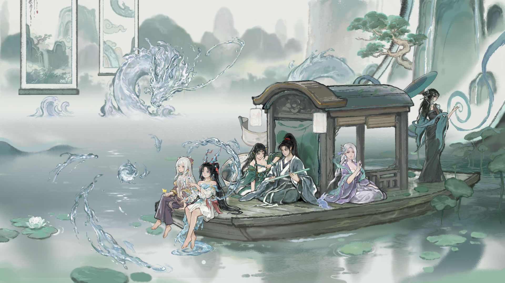
陨幽谷中的呼救
近日，相传在华封州陨幽谷中会时不时传来奇怪的呼救之声。前往其中探查，或许能发现一番机缘。
在华封州大地图移动触发。
如何完成、完成奖励
修仙者甲：日前我听到陨幽谷深处，有一个声音在求救。
修仙者乙：你是不是听错了？我最近进入查探啥都没听见。
修仙者甲：真的。好像是说，救救我！
修仙者乙：我觉得你是修炼走火了吧？
修仙者甲：走你个头！我走火还敢跑到陨幽谷中冒险吗？
修仙者乙：你怕不是见鬼了吧？
修仙者甲：啧，真的有奇怪声音。
移动奇遇
在大地图移动触发。
可重复触发的非必过事件归类到“奇遇”。
灵体恢复
体力较低时在大地图移动概率触发，每?月最多触发一次。
回满状态。

你身前突然云霞聚散，朦胧中一个灵体突然出现伸指指住了你。

二子灵：还挺能打的嘛，就是有点不要命。回！
二子灵：你都快不行了吧？我来给你恢复一下吧。潜力不错，死了可就浪费了。
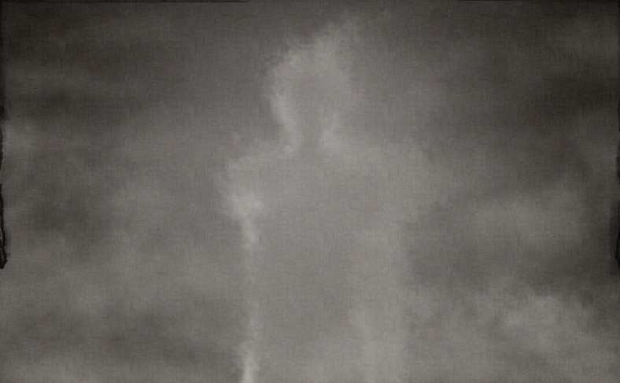
随着此灵指点，一股温暖的气流包裹你全身，让你感觉混身舒泰。然而便只这么一分心，眼前灵体已经消失无踪。
拳掌指山
“在灵泉边修炼”后选择“摧毁”会增加20魔道值。
“走近茅屋”后选择“破门而入”会获得后天气运小伤3月。

你路过一座大山，突然感受到大山方向传来一股细微的精纯灵气。你小心地来到山脚下，发现此山的形状奇致怪样，半山腰以上还被浓雾山岚遮盖，以路人眼光着实无法窥见一斑。因此你决定：
1 就地修炼
2 换个方向看看
3 就此离开
你从灵气中察觉到了一丝异样和危险，仿佛它属于奇高无比的境界你无法理解。慎重起见，你赶紧离开了大山。
异兽行云布雨
回满体力灵力念力。
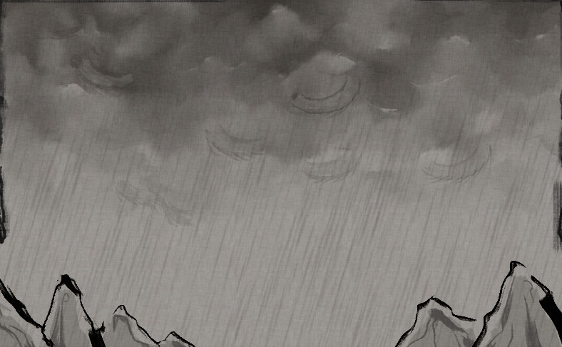
远处似有异兽在行云布雨。
不久天地间普降甘霖！
山谷震天咆哮
增加修为317±。
前方山谷传来震天咆哮。
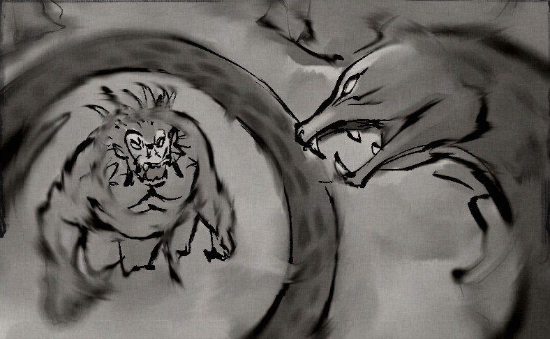
你凝神望去，只见一只白首赤足的猿猴正与一只通体漆黑头上冒着青光的巨蟒扭打在一起，嘶吼中大地震颤。
看见如此惊心动魄的战斗，你心有明悟，忽有所感，修为提升。
紫色翅膀老鼠
获得三品化瘀丹×19±。
前方草丛中传来悉悉索索的声音，你仔细看去，只见一只长着紫色翅膀的奇怪的老鼠正在翻找一处小地洞。

你怀着好奇往前走了一步，老鼠一惊用双翼掩住脑袋，双眼从羽翼间看到你后转瞬飞走。
你轰开地洞露出了藏在里面的东西。
南桥遗物
“自命翼儿”增加20魔道值，同时获得三品培元丹×17或灵石×397。
“收起贪念”增加20正道值。
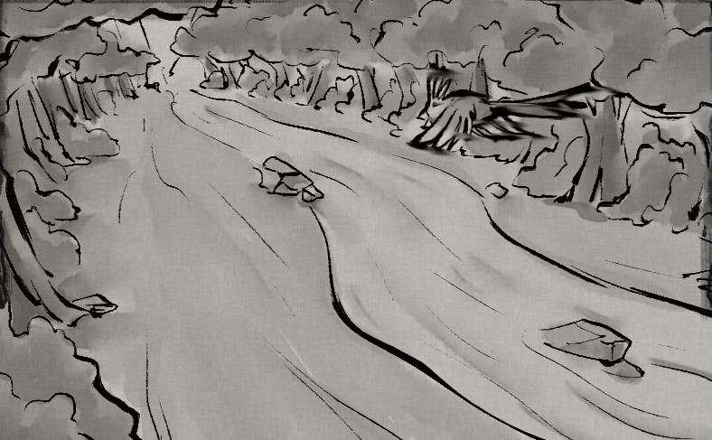
天空中一只绿色的鹦鹉从你身边飞过，嘴里边飞边重复着“南边桥下挂着我留给你的东西，翼儿，你切记不可说与他人知晓。”
1 你在心里给自己起个
小名叫翼儿
你顺着河流找到了那座桥，果然在桥下挂着一个袋子，你收起袋子在别人发现之前快步离去。
2 收起贪念告诉自己
这是他人之物
一股正气从你身上升起。
狐狸猛追黄鼠狼
“帮黄鼠狼”击败狐狸后获得五品灵果×1。
“不理会”结束奇遇。
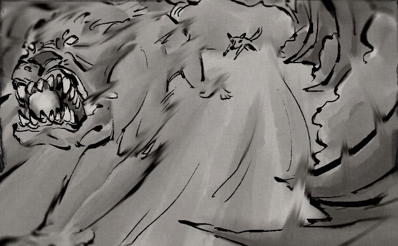
一只黄鼠狼叼着一颗珠子从你身边跑过，后面一只狐狸正在猛追。
1 帮黄鼠狼（战斗）
你赶走了狐狸，黄鼠狼叼着珠子跑开，一会儿又出现时嘴里咬着一个盒子，放到你脚下后就跑走了。
你收起盒子内的东西离开了这里。
2 帮狐狸（战斗）
XXX
3 不理会
野兽之间的事情就让它们自己解决吧，你继续赶路。
枣叶黄花桃果
“吃掉果实”后回复心情。
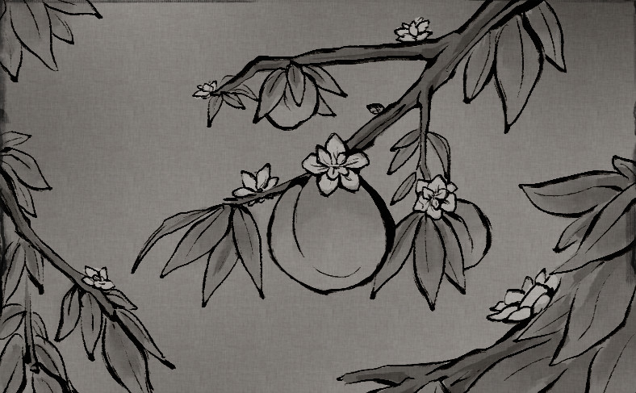
你路过一山，正觉得饥渴时看见山上有一棵树，长着枣树的叶子开着黄色的花朵，结有像桃子一样的果实。
1 吃掉果实
吃下果实后你心中阴霾一扫而空，心情大好。
2 强忍饥饿赶路
XXX
山峦鹿叫光亮
“寻找叫声来源”土灵根+1。

你经过一片山峦，山谷内传来鹿的叫声似有光亮传出。
1 寻找光亮
XXX
2 寻找叫声来源
你找了半天什么都没有找到，却在这山峦间感受到了一丝大地的气息。
金玉五彩光华
“探寻五彩光华”回满健康、灵力、体力。
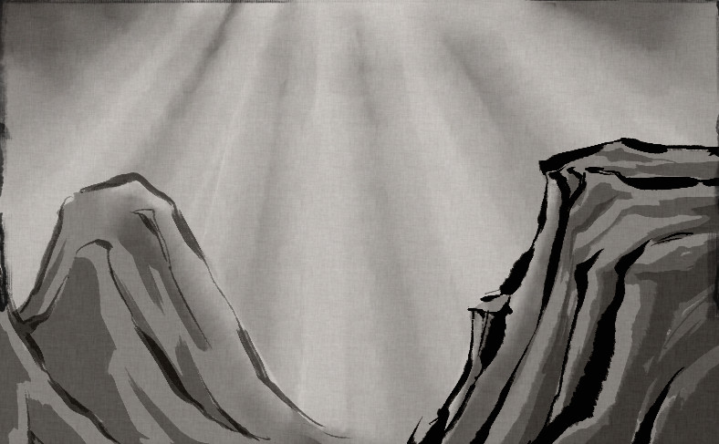
你沿河行走中只见远方山上似有金玉之光，更远处空中似有五彩光华闪动。
1 寻找金光来源
XXX
2 探寻五彩光华
你赶到附近只见天空中一只凤凰飞过，散发出五彩光芒慢慢将你笼罩，你回过神来时发现自己如重生一般。
破旧道观
XXX

你在夜里赶路，正巧附近有一座破旧道观，你走了进去，这时你打算：
1 上三炷香
XXX
2 偷走丹炉
XXX
3 默默离开
破旧的道馆让你感觉有些不适，你默默离开了这里。
山崖异兽
水灵根+1。
一阵大风卷起，你立足不稳跌下山崖。
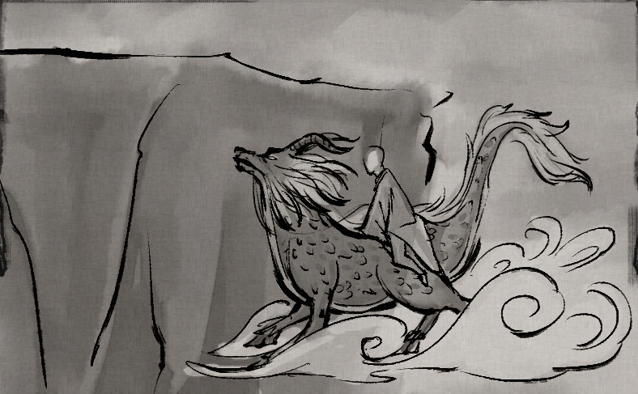
此时一狮头鹿角，虎眼麋身身披龙鳞的异兽腾云而至，将你托起并带回了山上，而后踏云而去。
你心中感叹时发现一丝灵气留在了体内。
悬崖灵果
“前去采摘”XXX。
心有疑虑直接离开无奖励。

前方悬崖上一颗灵果发出阵阵诱人的香味。
1 前去采摘
XXX
2 位置如此显眼却无人采摘只怕有异
你心有疑虑，看了灵果一眼离开了此地。
问号奇遇
大地图上的【?】图标触发。
可重复触发的非必过事件归类到“奇遇”。
灵泉刀痕茅屋
“在灵泉边修炼”后选择“摧毁”会增加20魔道值。
“走近茅屋”后选择“查看石桌”有概率获得一本蓝色筑基刀绝技和刀法资质+2。
“走近茅屋”后选择“破门而入”会获得后天气运小伤3月。
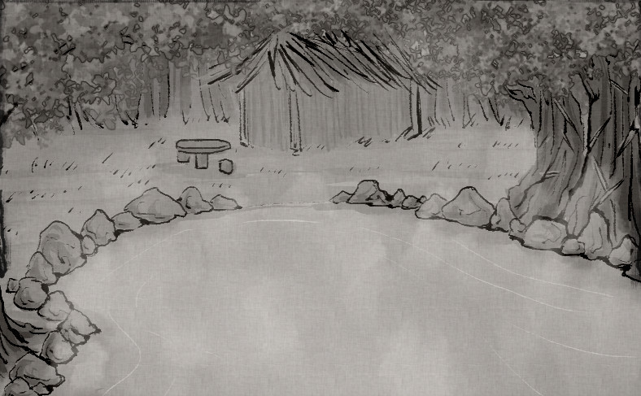
你在赶路之时，经过一处灵泉，你发现灵泉周遭的树木竟全是刀痕，不远处似乎还有一处茅屋。
1 在灵泉边修炼
你在灵泉边修炼了一番，你的修为提升了！
看着仍然向四周散发出灵力的灵泉你决定
11 离去
修仙路漫漫，你收拾好行囊继续修仙之途。
12 摧毁
此处不可留与他人!你深邃的眼眸中露出点点寒芒。
术法之下灵泉溃散化作点点灵气飘散与天地之间…
你带着一丝得意离开了此地。
2 走近茅屋
你来到茅屋前，只见茅屋紧闭，而屋前有一石桌，石桌上仿佛刻着什么字。
21 查看石桌
细看之下你发现这首词仿佛留有大道运转的痕迹，与周遭的刀痕隐隐吻合，你惊觉之下，连忙坐下参悟。
你捕捉到了一丝刀法道痕，心念电转在机缘巧合之下竟悟出了一套刀法的雏形！你迅速记下后匆匆离开了此地。
你参悟许久，却始终有如雾里看花难入其境…半晌以后你只好放弃并离开了此地…
22 破门而入
你直径走向茅屋，正准备破门而入时突然茅屋金光大作，一股大力传出，你被震出此地晕了过去……
等你醒来时发现自己身上负伤…你不敢造次悄悄离开了此地。
3 不理会
你无心理会这些，快步离开了此地。
果实几朵花
“采摘”后有概率吃到果实，体力上限+10。
加的是体力上限，不是体力。

你走过一片树林，只见一棵树上挂着一个甜瓜大小的果实，树上还开着几朵花，红色的花萼带着黑色纹路。
1 采摘
你非常幸运，果实突然从树上掉下来，正好掉在你的背包里。
你吃下果实，体力增加了少许。
果实突然从树上掉下来摔坏了…
2 路过
这片树林很快消失在你的身后…
废弃的遗迹
“寻找宝物”获得十几个三品化瘀丹或三品培元丹。
“修炼”获得六七天的修炼修为，或者获得一本蓝色或紫色当前区域最高境界的随机资质武技或绝技。

你发现远方有一处灵力浓郁之处，走过去后发现是一处废弃的遗迹。
1 寻找宝物
你发现这里已经被人翻找过，你没有发现什么特别的物品，只有之前翻找之人留下的一些随身用品。
2 修炼
你吸收了附近的灵力，修为提升了。
当灵力吸收完后这片遗迹开始崩溃，一会儿就只剩下一片灰土的废墟。
你坐下来修炼，却不知不觉睡着了做了一个梦…梦境中你看见一团光亮，你顺着光亮走去，发现光亮来自于一尊雕像后的一堵墙内。
白光消散你随之醒来，起身顺着梦境中的路发现了一尊人身龙首的雕像，你用手触摸雕像身后的墙壁，瞬间一块墙壁土崩瓦解露出了藏在里面的宝物。
奇怪猕猴
回复精力。
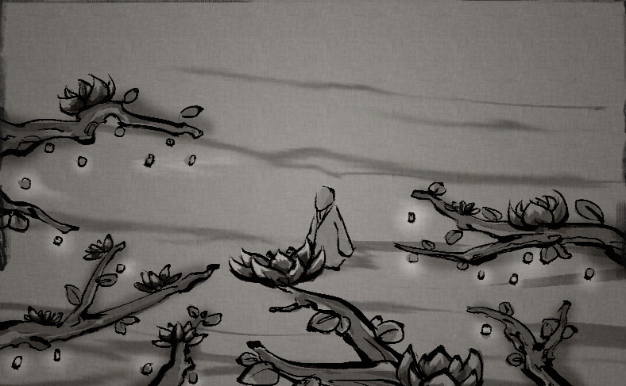
一群手臂上带有花纹的奇怪猕猴追了你几个时辰，情急之下你跳入河中。
在对岸你发现了一颗果树，圆圆的叶片下正开着花，白色花萼下红色的花朵带有黑色花纹，花朵下还结有几个像桔子的果实，你摘了几个扔进嘴里充饥后离开了这里。
路过一条河
“在河边休息片刻”XXX
“去河里打捞”丢失背包随机物品。

你路过一条河，河里波光粼粼仔细看去似乎是由河底的一团光亮所致。
在河边休息片刻
去河里打捞
在你附身去打捞时身上的东西似乎掉入了河里。
波纹一闪连光亮也瞬间不见了。
山洞透出光亮
“进去看看”XXX
“小心为妙”进入无怪的山洞，开箱获得灵石×504、三品培元丹×11。
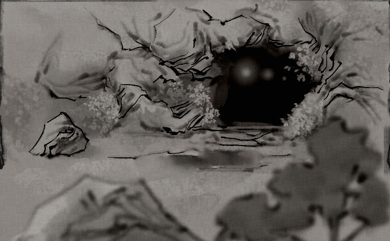
一个山洞中透出光亮。
进去看看
小心为妙
你远离洞口躲在远处观察，发现了洞内微微露出的脑袋和地上的影子，显然这是一处木精的洞穴，引诱好奇的路人趁机偷袭。你搜索了附近找到了一个木精藏宝的洞穴。
单足人面猫头鹰
获得绿色后天气运怪鸟之羽6月。
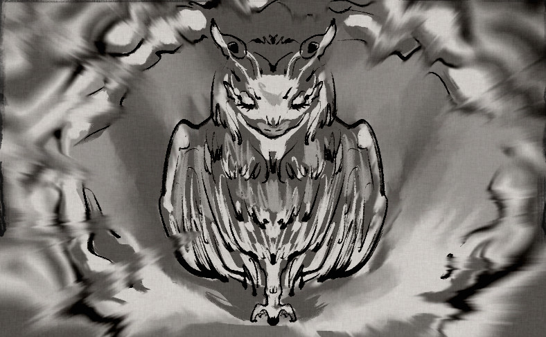
为了避雨你躲进一个山洞中，一道闪电伴随一声惊雷降在附近，光亮照出了洞中睡着一只怪鸟。
这只鸟只有一只脚，单足站在洞中睡觉，看上去像猫头鹰却长着人的面孔，显然这么大的雷声并没有吵醒这只怪鸟。
不久雨停了，因为好奇你从地上捡起一根这只鸟的羽毛插在了衣服上，然后离开了山洞。
路遇他人法阵
“进去避暑”获得随机资质灰色密卷、绿色后天气运品德高尚6月。

你经过的这片区域酷热难当，你顶着酷热前行中突然发现前方一处地方竟然下起雪来。
你进入雪地内发现内部灵气异常充裕，似乎有阵法吸收四周灵气并将其限制在这片雪地里。
进去修炼
进去避暑
你进入雪地待了一会儿觉得浑身凉爽。
正要离开时，一个老人不知从哪里出现“道友不贪图灵气坏我阵法，品德高尚，此物送予道友，愿道友永记初心。”
说完老人就消失了。你心中感慨收好物品离开了此地。
松动的法阵
“尝试破解”XXX。
心有疑虑直接离开无奖励。

你行走间发现前方地段有些异象，走近后发现是一处松动的法阵。
尝试破解阵法
破解不成只怕招来反噬
你察觉到了其中的危险，远远离开了此地。
提示
路标
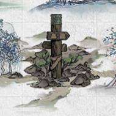
第一次从白源区进入永宁州后在大地图移动一格、只会触发一次。
获取到永宁州内最近的一个路标位置。
我：不远处似乎有一个路标…
过去看看附近有哪些城镇和宗门吧。
界元石
突破筑基境后在大地图移动概率触发、只会触发一次。
提示玩家获取界元石。之后去往城镇琅琊阁得到新提示琅琊阁界元石。
琅琊阁：你听说了吗？近日琅琊阁公开了一部分界元石的信息。
修仙者乙：界元石是什么？
修仙者甲：孤陋寡闻的东西！当你学习更深奥神妙的功法时，就不得不舍弃从前悟出的心得对不对？
修仙者甲：若你拥有这件宝物，就可以用它保留你以往参研功法时感悟出来的重要心得。
修仙者甲：若你以后得了机缘学习到更为强大的功法，还能从界元石中将保留的心得提取出来，并完美契合到新功法之中。
修仙者乙：什么？！还有此等神妙之物？！琅琊阁实是造福我等修仙者啊！
修仙者甲：我们赶紧去琅琊阁询问关于界元石之事吧，这次发现的石矿极为有限，过了这村就没这店了。
琅琊阁界元石
进入琅琊阁触发、只会触发一次。
琅琊阁管理员：仙长你好，近日八荒地脉变化，从而让部分界元石显露于世。而我阁已查知其确切方位。
琅琊阁管理员：这界元石可刻录保留以往修炼功法时感悟出来的心得，并能将其融合到新修炼的功法里。乃绝世之妙宝。
琅琊阁管理员：如今只需交纳一定灵石以供我阁启动新一轮的秘籍研究即可获知界元石所在。
琅琊阁管理员：我阁一向旨在不遗余力提高修仙者修为，若仙长对此感兴趣，不妨到各地琅琊阁管理员处询问关于界元石之事。
路过仙祠
路过仙祠触发、只会触发一次。“跟随探查”后视角会移动到该仙祠。

你看到前方有一人行色匆匆，走向一个充满仙力的建筑。
跟随探查
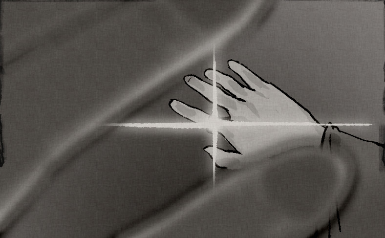
此人从储物戒拿出什么东西，虔诚地供奉，而后有一道光闪过。
我：敢问道友，这是在做甚？此建筑是何物？
修仙者：此乃仙祠，为前些时日出现的，传闻是为供奉和参拜仙人所设，八荒各州皆有。
修仙者：据说诚心供奉足够数量的东西时，会得到仙人的回馈。似乎不同的仙祠，回馈的东西并不相同，道友若是感兴趣也可前去试试。
物品
丹符：丹药。
书籍：。
装备：坐骑、戒指。
材料：气息、天材地宝。
道具：。
特殊：灵物、书籍。
丹药
名称：六品化瘀丹、境界：炼气境、品质：灰、分类：丹药
介绍文本：最为常见的疗伤丹药，使用后能够恢复少量的体力值。
丹药效果：体力+12
战斗中消耗：8念力
战斗中冷却：20秒
名称：六品聚气丹、境界：炼气境、品质：灰、分类：丹药
介绍文本：最为常见的能够恢复灵力的丹药，使用后能够恢复少量的灵力值。
丹药效果：灵力+15
战斗中消耗：3念力
战斗中冷却：20秒

名称：聚气丸、境界：炼气境、品质：蓝、分类：丹药
介绍文本：可以使炼气前期的修仙者突破修为停滞的瓶颈，步入炼气中期。
书籍
坐骑
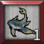
名称：荒角碧游鲲、境界：筑基境、品质：红、分类：坐骑
介绍文本：荒角碧游鲲，游弋天地，以荒角吞噬邪恶，守护安宁，其身影成为山海间最神秘的传说。
装备效果：脚力+800、精力上限+20。
筑基期最好的坐骑，别忘了刚筑基立马装备上。

名称：圣阳羽毛、境界：炼气境、品质：橙、分类：坐骑
介绍文本：圣阳羽毛蕴含着狂暴的力量，却因天地法则的束缚，导致其虽能翱翔，却难以触及苍穹之巅，实在可惜。
装备效果：脚力+400。
练气期最好的坐骑，别忘了拿到立马装备上。
戒指
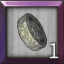
名称：石沉戒、境界：炼气境、品质：紫、分类：戒指
介绍文本：最低级的储物戒指，由注灵的石髓千锤百炼而成。
装备效果：背包上限+12、封印强度25。
气息
名称：火灵气、品质：纯度越高品质越好、分类：气息
介绍文本：蕴含着火属性的灵气，六道灵气之一，能够在修真者冲击筑基境时提供帮助。纯度越高，在突破时能够给修真者提供的帮助就越大。
●可通过击杀永宁州区域内的炙炎之域中的怪物获得火灵气碎片，并在城镇内的工坊中进行合成获得。

名称：水灵气、品质：纯度越高品质越好、分类：气息
介绍文本：蕴含着水属性的灵气，六道灵气之一，能够在修真者冲击筑基境时提供帮助。纯度越高，在突破时能够给修真者提供的帮助就越大。
●可通过击杀永宁州区域内的极寒之地中的怪物获得水灵气碎片，并在城镇内的工坊中进行合成获得。
名称：雷灵气、品质：纯度越高品质越好、分类：气息
介绍文本：蕴含着雷属性的灵气，六道灵气之一，能够在修真者冲击筑基境时提供帮助。纯度越高，在突破时能够给修真者提供的帮助就越大。
●可通过击杀永宁州区域内的雷罚之地中的怪物获得雷灵气碎片，并在城镇内的工坊中进行合成获得。
名称：风灵气、品质：纯度越高品质越好、分类：气息
介绍文本：蕴含着风属性的灵气，六道灵气之一，能够在修真者冲击筑基境时提供帮助。纯度越高，在突破时能够给修真者提供的帮助就越大。
●可通过击杀永宁州区域内的暴风山谷中的怪物获得风灵气碎片，并在城镇内的工坊中进行合成获得。

名称：土灵气、品质：纯度越高品质越好、分类：气息
介绍文本：蕴含着土属性的灵气，六道灵气之一，能够在修真者冲击筑基境时提供帮助。纯度越高，在突破时能够给修真者提供的帮助就越大。
●可通过击杀永宁州区域内的流沙之域中的怪物获得土灵气碎片，并在城镇内的工坊中进行合成获得。
名称：木灵气、品质：纯度越高品质越好、分类：气息
介绍文本：蕴含着木属性的灵气，六道灵气之一，能够在修真者冲击筑基境时提供帮助。纯度越高，在突破时能够给修真者提供的帮助就越大。
●可通过击杀永宁州区域内的醉花林境中的怪物获得木灵气碎片，并在城镇内的工坊中进行合成获得。
天材地宝
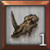
名称：葬沙骨、品质：橙、分类：天材地宝
介绍文本：本是普通的妖兽骨，埋沙土之下吸收地气精华，经百年岁月后骨生质变，坚硬如铁，上结石尖，石尖越长则品质越好。
炼气境的修仙者在突破至筑基境时，辅以此天材地宝，可以大幅提升修仙者的属性。
●可在永宁州区域中某处某方的通灵秘境内，击杀秘境中的当康获得。
用作突破时提供的属性：
攻击：+4
防御：+3
体力上限：+79
会心：+11
移速：+10

名称：朝夕露、品质：橙、分类：天材地宝
介绍文本：采取八荒珍品夕颜花黎明闭合前最后一滴露水与入夜时第一滴露水，揉合而成，吸食有清心宁神之效。
炼气境的修仙者在突破至筑基境时，辅以此天材地宝，可以大幅提升修仙者的属性。
●可在永宁州区域中某处某方的通灵秘境内，击杀秘境中的大蟹获得。
用作突破时提供的属性：
攻击：+3
防御：+3
体力上限：+53
灵力上限：+11
暴击倍数：+30
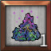
名称：千年钟乳、品质：橙、分类：天材地宝
介绍文本：经千年岁月后，比一般钟乳更具灵气。
炼气境的修仙者在突破至筑基境时，辅以此天材地宝，可以大幅提升修仙者的属性。
●可在永宁州区域中某处某方的通灵秘境内，击杀秘境中的鸣蛇获得。
用作突破时提供的属性：
攻击：+2
体力上限：+63
护心：+8
暴击倍数：+30

名称：朱果、品质：紫、分类：天材地宝
介绍文本：百年开花，百年结果，或如球形或如扁桃，形状不一，色泽圆润通红，灵气盎然。
炼气境的修仙者在突破至筑基境时，辅以此天材地宝，可以大幅提升修仙者的属性。
●可在永宁州区域内的炙炎之域、极寒之地、雷罚之地、暴风山谷、流沙之域、醉花林境内，击杀其中出现的大妖兽有概率获得。
用作突破时提供的属性：
攻击：+3
灵力上限：+42
护心：+8
抗暴倍数：+30

名称：玉龙霜、品质：紫、分类：天材地宝
介绍文本：玉龙为雪飘落而下，其中少许久久未融，经年累月凝结成霜花。晶莹剔透，寒气彻骨。
炼气境的修仙者在突破至筑基境时，辅以此天材地宝，可以大幅提升修仙者的属性。
●可在永宁州区域内的炙炎之域、极寒之地、雷罚之地、暴风山谷、流沙之域、醉花林境内，击杀其中出现的大妖兽有概率获得。
用作突破时提供的属性：
攻击：+4
会心：+11
名称：暖玉、品质：紫、分类：天材地宝
介绍文本：蕴含少许火灵真力，佩戴可不惧严寒。
炼气境的修仙者在突破至筑基境时，辅以此天材地宝，可以大幅提升修仙者的属性。
●可在永宁州区域内的炙炎之域、极寒之地、雷罚之地、暴风山谷、流沙之域、醉花林境内，击杀其中出现的大妖兽有概率获得。
用作突破时提供的属性：
体力上限：+79
灵力上限：+11
暴击倍数：+30
名称：夕颜、品质：红、分类：天材地宝
介绍文本：夕颜又名月光，八荒珍品，绿茎圆柱，茎干卷须，花开5朵，高脚蝶状，或白或粉带淡绿色褶纹，花盘环状具芳香，花朵夜间开放，直到黎明时才闭合。夕颜悄然含英，又阒然零落。
筑基境的修仙者在突破至结晶境时，辅以此天材地宝，可以大幅提升修仙者的属性。
●可通过击杀雷泽区域内出现的妖兽之王——炼狱当康获得。
用作突破时提供的属性：
攻击：+7
防御：+4
体力上限：+158
会心：+14
移速：+10
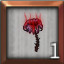
名称：绮罗幽香、品质：橙、分类：天材地宝
介绍文本：八荒之中有一绝地，方圆十里之内白骨皑皑，在那正中有一株邪花，枝杆多针刺，花瓣倒卵形，紫红相间，幽香万里，吸食血肉成长，常散发香味引生灵前来再吸食，内含各种血魄精华，若能善用妙用无穷。
筑基境的修仙者在突破至结晶境时，辅以此天材地宝，可以大幅提升修仙者的属性。
●可在永宁州、雷泽区域内的玄灵秘境内，击杀秘境中的大妖兽可获得（玄灵秘境的位置可以去酒馆中打听打听）。
用作突破时提供的属性：
攻击：+3
防御：+3
念力上限：+53
护心：+14
抗暴倍数：+30

名称：鬼哭藤、品质：橙、分类：天材地宝
介绍文本：寻常藤蔓偶然之下吸收无边怨力，产生质变，散发莹莹幽光，每逢入夜，发出刺耳尖啸，闻之悚然，夜鸣鬼哭由此而来。
筑基境的修仙者在突破至结晶境时，辅以此天材地宝，可以大幅提升修仙者的属性。
●可在永宁州、雷泽区域内的玄灵秘境内，击杀秘境中的大妖兽可获得（玄灵秘境的位置可以去酒馆中打听打听）。
用作突破时提供的属性：
防御：+3
体力上限：+132
灵力上限：+13
念力上限：+26
暴击倍数：+30

名称：北冥摄魂、品质：橙、分类：天材地宝
介绍文本：由幽冥之气凝结而成，通体乌紧，条纹相接形似邪眸闭眼，有镇灵摄魂之能，据传石眸开眼，世间灾厄重重。
筑基境的修仙者在突破至结晶境时，辅以此天材地宝，可以大幅提升修仙者的属性。
●可在永宁州、雷泽区域内的玄灵秘境内，击杀秘境中的大妖兽可获得（玄灵秘境的位置可以去酒馆中打听打听）。
用作突破时提供的属性：
攻击：+5
防御：+1
体力上限：+105
灵力上限：+13
会心：+14
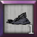
名称：星辰砂、品质：紫、分类：天材地宝
介绍文本：繁星陨落，迸裂数十，大块的含较多星辰之力的为陨星铁，而其中细小仅有微薄星辰之力便是星辰砂。
筑基境的修仙者在突破至结晶境时，辅以此天材地宝，可以大幅提升修仙者的属性。
用作突破时提供的属性：
攻击：+2
防御：+2
灵力上限：+53
念力上限：+26
会心：+14

名称：天元茯苓、品质：紫、分类：天材地宝
介绍文本：生长在天元中的茯苓，常年吸收天元山灵气，较比普通茯苓，其形巨大，灵气四溢。
筑基境的修仙者在突破至结晶境时，辅以此天材地宝，可以大幅提升修仙者的属性。
用作突破时提供的属性：
体力上限：+158
护心：+14
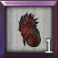
名称：凤凰果、品质：紫、分类：天材地宝
介绍文本：多生于凤凰栖息之地，每棵可结果九九之数，极烈阳性，不可食，否则会自燃而亡。
筑基境的修仙者在突破至结晶境时，辅以此天材地宝，可以大幅提升修仙者的属性。
用作突破时提供的属性：
攻击：+4
体力上限：+105
暴击倍数：+30

名称：碧痕、品质：紫、分类：天材地宝
介绍文本：一块非金非铁非玉，通体碧绿，中有裂痕。不明来历，却拥有极强的功效。
筑基境的修仙者在突破至结晶境时，辅以此天材地宝，可以大幅提升修仙者的属性。
用作突破时提供的属性：
攻击：+3
防御：+2
体力上限：+105
抗暴倍数：+30
道具
灵物
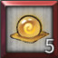
名称：造化丹、品质：红、分类：灵物
介绍文本：造化丹，逆天改命之灵丹，修士服用后可重塑命格，扭转乾坤，改写既定命运，踏上无上修行之路。选择逆天改命时可使用此丹进行刷新。
全档只此5个。
书籍（剧情）

名称：武罗遗失的书信、品质：蓝、分类：书籍
介绍文本：武罗一直随身携带的书籍。
书中内容：
我太小看他们想去外界的决心了…村民竟想凭借人力挖开太行山！我实在不想阻挠他们，但若放任他们继续破坏的草木，山中的灵力定然会迅速流失，阵法早晚会失效。可是我又不能伤了他们，该怎么办呢…
村民们在生活无忧后，近日竟有了想去外界的想法。他们根本不知道外界修仙者之间的竞争有多激烈，为了获取修炼资源会不惜一切代价的掠夺！他们这些寻常人如何能够抵抗呢…
为了结合太行王屋二山布置天然阵法，我付出了巨大的代价才收集到一部分材料，却还是缺少了树妖魂珠与万古藤，但构筑出的阵法抵御外敌绰绰有余。虽阵眼处几乎没有防备，此时却也别无他法…
既然你的愿望是保护村庄的人不再遭受外界欺压，那么我便会尽全力去将它实现…多年前我偶然习得紫气真君阵，若能结合太行王屋二山布下此阵，应可抵御外界的侵袭。虽我一次也未曾用过，但这是当下唯一的办法。
不知过了多少年，你还是没有回来…我会一直替你守护着村庄，直到你回来。
名称：二当家的书、品质：蓝、分类：书籍
介绍文本：二当家以书作信，怕是营寨中条件有限。
书中内容：
你或许不认识我……但我与你初见，却在那日桃花盛开处，你轻嗅桃花，我偶然一望，只觉得此生若能与你厮守，便是三生有幸。我痴痴望着……你离开时，我虽是万般心事，能与谁人说呢？只得如那坠下残花，静静望着赏花人离去。
我虽身是山贼，一生却未曾染红。自那日见你，我便觉得人生或许尚有一道曙光……然而，我又该如何将你握住？听闻你离开便觉得人生最悲哀莫过于……思念……却又爱不得。
那日我于街市之上偶见一桃花钗，便觉你当时模样盈上心间，自此此钗日夜不离我身，我满腔相思对其说了。
此钗品质极佳，留用或是典当皆可，我此生遗憾已作云烟，只叹息未能与你，当面倾吐情意。
如若上天怜我，只期来世，能于桃花树再见到你，将一心情意，缓缓道来……
粗野山人读书甚少，言辞鄙陋之处还望多多包涵……
逆天改命
？？？关于逆天改命的说明？？？
特殊逆天改命
游戏中有如下的特殊逆天改命：
逍遥游
你的脚力+500；若你没有宗门，则每次在灵气高于100的格子上修炼时，有50%的概率获得一些灵果。
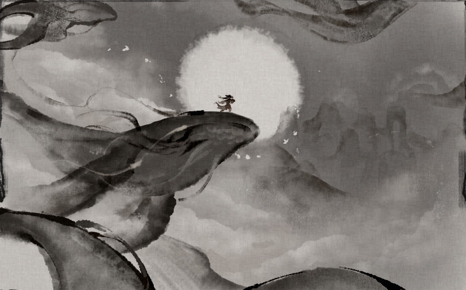
在接受传功之际，你好似看到一少年站在大鱼之上邀游天地，不由一阵痴迷。你对自由和酒脱之情愈发坚定，心中明白自己这一生终究是浪子，宗门不可能是你的安身之所，你要做世间的散人，随风逍遥。
宗门逆天改命
宗门灵阁可出现的逆天改命有：
虎魄龙魂、天瞳之刃、天外有天、天人合一、天罡步法、震天怒啸、凝元寂灭、摄神寒光、载物无疆、踏雪无痕、聚雷尖戟、宿命之引、杀心骤起、排山倒海、穿云电闪、天地同寿、烈火燎原、炉火纯青、
虎魄龙魂
绝技每次命中敌人时，会有40%概率附加。龙吟，造成自身武法资质总和250%的伤害。虎啸，造成自身全灵根总和250%的伤害。每2秒内最多触发一次。

正当你突破之际，宗门灵台上突生万道霞光，一龙一虎两条虚影从霞光中腾飞而出，在你周身盘旋，随即化作点点星光融入了你的身体。你全身经脉不由一阵紧缩，武法与灵根在脑中彼此交汇，似有圆融之势。你参悟良久，终于明白了万法归宗之理。
天瞳之刃
攻击造成的最低伤害变更为665。此伤害随境界提升。
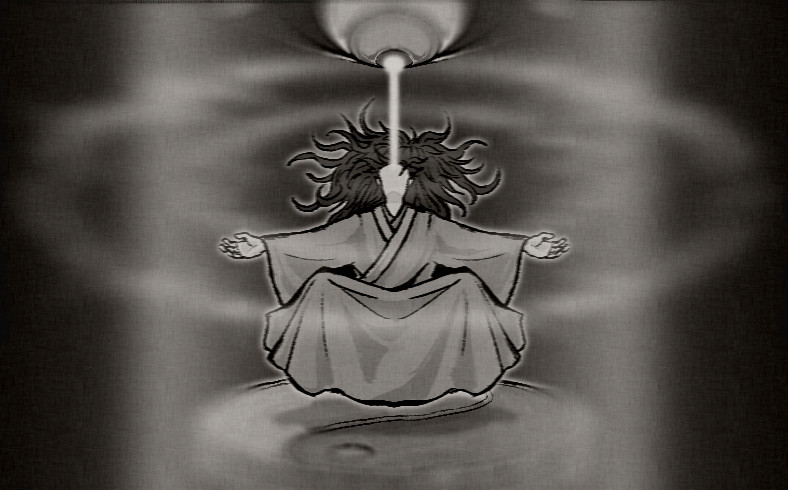
正当你突破之际，一道锐利的目光从天而降，竟直射在你眉心处。你全身剧震，仿若被一柄刀刃插入脑海。许久后，你从疼痛之中苏醒过来，发现除了眉心处仍隐隐作痛外，自己举手投足间竟自带一丝锋利的气劲。
逆天改命名
效果说明

突破文本
二级逆天改命
某些逆天改命可以升级，选择了这些逆天改命之后，突破境界必出其升级版。
升级版逆天改命的效果是对原逆天改命效果的替换而不是叠加。
这些升级版逆天改命有：
武法进阶
武技的冷却时间-25%。（选择后替换武法入门，可升级为武法精通）
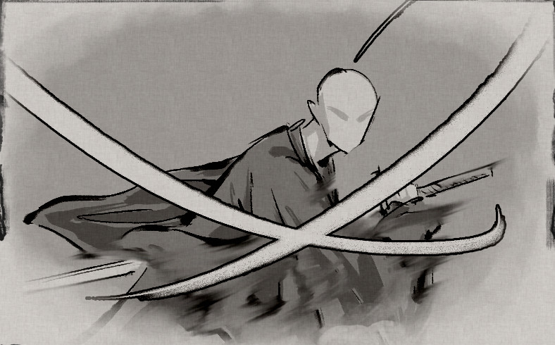
在突破的过程中，你再次进入那片雾境，雾中之人在施展另一种你熟悉的武技，但是速度却比以前更快了。你正打算仔细观察一番时雾气再次消散。你回想看到的一切，有所感悟。
筑基逆天改命
突破筑基可出现的逆天改命有：
火力四射、水力四射、媚骨、跑得很帅、黄巾天师、肉搏之交、煞气、双修大法、妒火中烧、灵果馈赠、老而弥坚、物尽其用、疾速代谢、天地精华、速读秘法、钻研秘术、苦中寻乐、灵光一闪、若有道缘、开心果、生龙活虎、机灵鬼、灵力之种、体力之种、雷力四射、风力四射、木力四射、妖术入门、菊花烫、小跟屁虫、小宝的盾、小李飞剑、血魔大法、盾灵入门、潜能入门、金蝉无影、灵能之雨、血灵入门、剑灵入门、血祭入门、视灵、视精、灵法入门、武法入门、幻灵锅、炼器学徒
火力四射
效果说明

突破文本
水力四射
你在攻击时，有10%的概率向随机一个敌人持续发射水柱5秒，造成威力6849/秒的水属性伤害。

在你突破的过程中，周围空间中一股游离的水灵气被吸引过来，很快融入了你体内的灵气。你正感到诧异，这股水灵气迅速吸收周围灵气，形成一股灵力旋涡。你惊疑不定想要将其逼出时，一股灵力流动从你体内爆发化作一条水柱冲出体外。释放完这股力量体内的旋涡慢慢回归沉寂，只是体内多出一股循环流淌的灵气。
媚骨
效果说明

突破文本
跑得很帅
效果说明

突破文本
黄巾天师
效果说明

突破文本
木力四射
在战斗中每12秒可在自身附近召唤1只小花妖（持续7秒）。

在你突破的过程中，周围空间中一股游离的木灵气被吸引过来，很快融入了你体内的灵气。你正感到诧异，这股木灵气迅速吸收周围灵气，形成一股灵力旋涡。你惊疑不定想要将其逼出时，一股灵力流动从你体内流出化作万千绿意滋润大地。释放完这股力量体内的旋涡慢慢回归沉寂，只是体内多出一股生机盎然的灵气。
结晶逆天改命
突破结晶增加的可出现的逆天改命有：
咸猪手、先受后攻、徒手专精、兵刃专精、风雷擎天、地火明夷、水木长生、似有道缘、灵力之芽、体力之芽、李四来也！、鸡中霸王、化物、鬼修入门、红尘剑匣、归一决、星耀尘寰、双灵共生
金丹逆天改命
具灵逆天改命
元婴逆天改命
化神逆天改命
悟道逆天改命
羽化逆天改命
登仙逆天改命
先天气运
天级先天（金）
神级先天（红）
仙级先天（橙）
圣级先天（紫）
蓝色先天
绿色先天
灰色先天
后天气运
神级后天（红）
仙级后天（橙）
圣级后天（紫）
蓝色后天
绿色后天
怪鸟之羽
增加10%灵根抗性。
品德高尚
增加5点幸运和10%的护心。
灰色后天
黑色后天
重伤
前往太行山，回城镇休整，重新挑战武罗，擎天寨事件完毕后第二个月
体力上限暂时减少30%。
消耗5天，在城镇客栈投宿或在宗门疗伤院疗伤修养解除。
仙祠
仙祠是游戏内重要的供奉与奖励系统，分布在各州，玩家每月可前往供奉一次以获得珍稀资源。不同仙祠提供独特奖励，如赤幽州的斗魂仙祠可获取防御丹增强生存能力，烽岚仙祠提供炼器材料；暮仙州的悬壶仙祠能获得回血丹并解锁隐藏剧情；永宁州的琼芳仙祠奖励道心果，助力境界突破；而云陌州的月兰仙祠则赠送坐骑，提升移动速度。仙祠玩法不仅强化角色属性，还结合任务与挑战，如昆吾仙祠需完成剑修任务获取功法，天幻仙祠则涉及器灵天赋优化。合理规划仙祠供奉可大幅提升修仙效率，是玩家成长的关键途径之一。
仙祠会在玩家突破结晶境后立刻刷出，如果仙祠刚好在某石阵视野内则可以直接在地图上看见。
琼芳仙祠
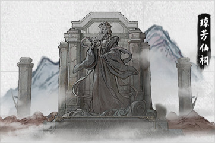
供奉奖励：六品道心果×11。
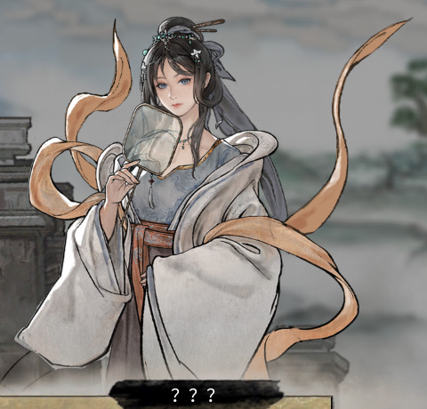
？？？：嗯……
？？？：本仙子念在你如此虔诚的份上，就赐你六品道心果*11吧。
鬼谷八荒百科by晚安安
临时文本↓
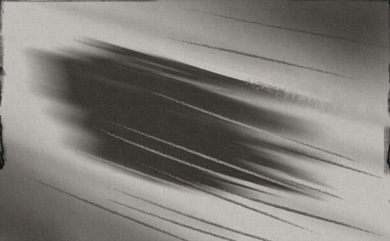
你感觉地面微微震动，碎石细砾更是无故虚浮。此时破风声起，一道青影急速掠过。之后地面复归静止，碎石亦重落地上。你正疑惑究竟发生什么事，两名修仙者已同时御剑来到。
修仙者甲：明明就在这附近，怎么不见了呢？话说，凭你本事竟将古时暮仙州大能多次围剿未果的妖兽伤了？
格式如下↓
一级标题
二级标题

任务内容
触发方式
如何完成、完成奖励
如何未完成或失败、失败惩罚
提示
吐槽
普通文本
1 选项（短、一行）
2 选项（中、两行）
2 选项（中、两行）
3 选项（长、三行）
3 选项（长、三行）
3 选项（长、三行）